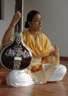
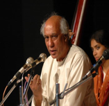
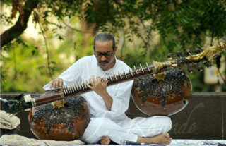
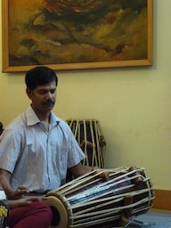

On the evening of the 8th of November 2014, Bahauddin Dagar and Pelva Naik will be performing Dhrupad at Grove 4, Good Earth Orchard, Kengeri. The performance will start at 5:30 pm.
As the venue is a small and intimate space that seats only 100 people, please RSVP to the person who invited you. The contribution per guest is Rs. 500. To help us plan better, we are adopting a first-come-first-served approach. Your attendance will be considered confirmed only after the payment is received.
Please take a moment to read through the profiles of the artistes below.
Warm regards,
The Bangalore Dhrupad Group.

Pelva Naik, a young and forthcoming artist of her generation, has been trained in the Dhrupad style of vocal music under the eminent Dagar Gharana of Dhrupad music.
Born in 1986, in Ahmedabad, Gujarat, Pelva was brought up in a family of art lovers and connoisseurs; where she was nurtured amid affluent virtues of Indian culture, art and music.
She received her initial training in Dhrupad from Guru Ustad Zia Fariduddin Dagar Saheb and has also received proficient guidence from Shree Bahauddin Dagar. She has been full time involved in the practice and study of the Dhrupad Art.
She teaches Dhrupad at the Rajghat-Krishnamurti Foundation India, Varanasi and in Bangalore.
She has performed at the All India Dhrupad Mela – Dhrupad Samity and the Krishnamurti Foundation at Varanasi (Mar-Apr 2008), Anahad Sangeet Seva Samstha at Panvel, Mumbai (Nov 2010), the Bangalore International Centre (Mar 2012), All India Dhrupad Parva Live International telecast by Bhopal Doordarshan Kendra (Jul 2012), BARSI - a two day Dhrupad Festival in memory of Rudraveena Maestro Ustad Zia Mohiuddin Dagar at IIT Powai, Mumbai (Oct 2012) and at the Shri Aurobindo Auditorium at Auroville, Pondicherry (Jan 2014).

Her guru, the late Ustad Zia Fariduddin Dagar, the most dynamic maestro and teacher of Dhrupad Gayaki, the heritage of the nation needs no introduction.
Ustadji has managed to keep the tradition of his family alive, thus representing the Nineteenth Generation of the Dagar Gharana in a magnificent way. Ustadji's dynamic personality and his grandeur was easily felt in his music. Ustadji, a giant in this tradition, easily put together the old and the new in such a manner of bringing together, that one can only be in awe of his complex renderings.
Ustadji spent years sincerely imparting his knowledge of his music and his experiences to various students around the world. As a result he spent time in various Gurukuls which in turn produced professional musicians to bring forward this style of singing and playing to the audiences. He spent time firstly at Innsbruck, Austria, then at Bharat Bhavan, Bhopal, then at Dhrupad Sansar, IIT Mumbai and lately he was heading the Dhrupad Gurukul established by his elder brother, the great Rudraveena maestro Ustad Zia Mohiuddin Dagar at Panvel, Mumbai.

Mohi Baha'ud-din Dagar is the son of the legendary Rudra Veena maestro Ustad Zia Mohiuddin Dagar and nephew of the renowned vocalist Ustad Zia Fariduddin Dagar. He began his training on the sitar under the tutelage of his mother Smt Pramila Dagar at the age of seven. After three years of initial training he went on to learn the Surbahar and then the Rudra Veena under his father, Ustad Zia Mohiuddin Dagar and after the demise of his father, he continued his talim under the tutelage of his uncle Ustad Zia Fariduddin Dagar.
The untimely demise of his father in 1990 forced Baha'ud-din to step on to the concert platform at the early age of twenty. Since then he has been responsible for keeping the Saadharni Geeti (Dagar Vaani) style of Dhrupad alive on the Rudra Veena. While Baha'ud-din's music clearly reflects the training he has received from his father, he has incorporated a personal dimension to the depth and exploration of the raga. The vocal training he has received from his uncle has helped him incorporate the Dhrupad syllables (Te, Ta, Ra, Naa etc.) in the playing of the Rudra Veena. This gives a unique and precise sense of timing in the cutting of phrases whilst presenting the aalap, jor and the jhala.
Acknowledging his responsibility in taking the Dhrupad tradition to future generations, Baha'ud-din teaches both vocal and instrumental forms of music to students from different backgrounds at the Dhrupad Gurukul at Palaspe near Panvel which was established by his father in 1986. He firmly believes that teaching is integral to his own learning and growth as a musician.
In 1990 Baha'ud-din received the Lakhanpal Foundation fellowship for two years. He also received a two year Fellowship In 1993 from the Ministry of Human Resource Development, India.
His list of awards consist of the prestigious Sanskriti Award, instituted by the Sanskriti Foundation New Delhi, 2006, The Yuvak Sadhak Award by the Sangeetendu Lal Mani Mishra Foundation Bhopal 2007, the Raza Award 2007 by the Raza Foundation, New Delhi and The Sangeet Natak Akademi Award for 2012-2013.
He is an 'A' Grade artist at All India Radio, Mumbai.
Baha'ud-din has performed to various audiences in India and abroad, some of them being:
The Tansen Samaroahs, Gwalior; The Shankarlal Festival, New Delhi; The Doverlane Festival, Calcutta; Dhrupad Samaroahs in Mumbai, Delhi; The Sangeet Natak Academy Fest, Delhi; Saptak, Ahmedabad; Kalidas Samaroah, Ujjain; SRA, Kolkata in India; Zeitfluss Fest, Austria; Festival Du Fes, Morocco; Mozart Bicentenary Celebration, Austria; Darbar Festival, Birmingham; SPiC-MACAY in India, U.S.A. and Canada.
His music has been recorded by Music Today(India), Malcars, (France), Ragini Sutra (India), Sense World (London) and India Music Archives (USA).
He has also been invited to serve under Nana Shirgaokar Research Professorship at the University of Goa for three years from 2013 to 2015.
He presently teaches at the Dhrupad Gurukul at Palaspe near Panvel and continues to learn from Pandit Pushpraj Koshti, a senior disciple of Ustad Zia Mohiuddin Dagar and Ustad Zia Fariduddin Dagar.

Sanjay Agle was born in Indore in 1966 and he learnt under his father Pt. Kalidas Pant Agle. He learnt the Pakhawaj under the Guru Shishya Parampara Scheme with Swami Pagaldasji.
He won the Gold Medal in A.I.R. Music competition and has been a Doordarshan artist with programmes telecast in Bhopal and other stations.
He has performed in Hungary with Ustad Bahauddin Dagar and in Hong Kong and Italy with Pt. Uday Bhawalkar. He has also performed in the Amir Khan Festival (1985) Indore, the Tansen Samaroh (1986), Ustad Zia Mohiuddin Dagar Barsi (2000-2006) and has accompanied artists such as Ustad Zia Mohiuddin Dagar, Zia Fariduddin Dagar, Gundecha Brothers, Ustad Bahauddin Dagar, Uday Bhawalkar, Nirmalya Dey, Ritwick Sanyal and others.
He has taught alongside Distinguished Faculty Ustad Zia Fariddudin Dagar in Dhrupad Sansar - a community gurukul project at IIT Mumbai.
Saturday, 8th November 2014
5:00 - 5:30 pm
Gathering at Grove 4, GoodEarth Orchard.
5:30 - 6:30 pm
Ms. Pelva Naik accompanied on the pakhavaj by Shri Sanjay Agle
6:30 - 7:00 pm
Break
7:00 pm onwards
Shri Baha'uddin Dagar accompanied on the pakhavaj by Shri Sanjay Agle.
Please plan to be on time.
Go past Kengeri town on the Mysore Road when coming from Bangalore. After you pass under a flyover with an arch, take the first left onto Doddabelle Road, adjacent to "Metro Iron and Steel Works". Go past the KSRTC Repair Depot on your right. Take the first left adjacent to a paper factory with a signboard for GoodEarth Orchard. Follow the signs to the community.